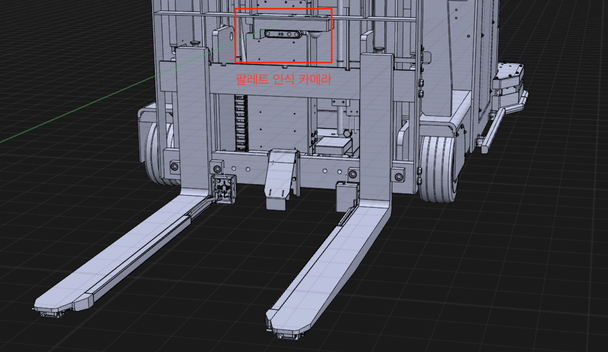
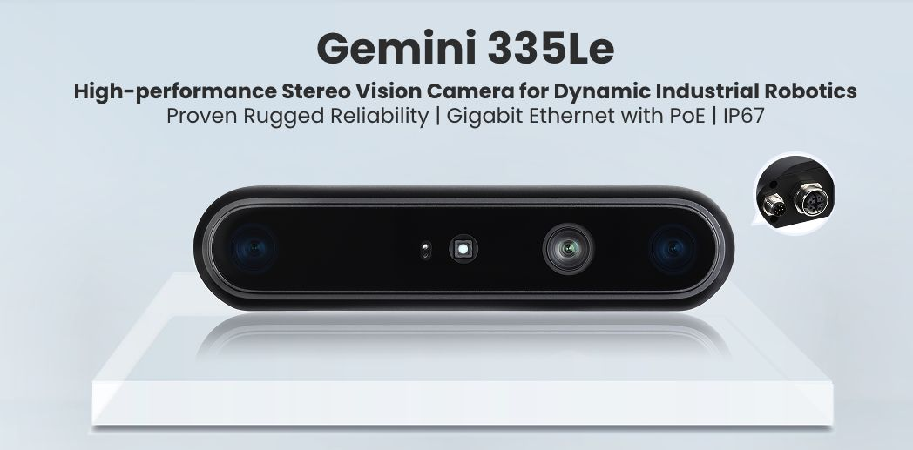
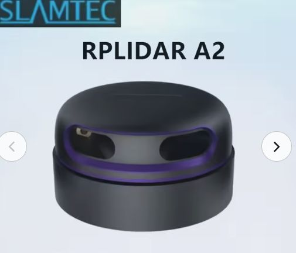

하드웨어 점검
주행·승강 특성 측정
센서 장착·ROS 2 연동
수동 제어·비상정지
단계별 점검
구동 및 정지 동작
위치 센서 측정값
구동 및 정지 동작
위치 센서 측정값

팔레트 인식 및 포크 삽입
적재·이송·하역 자동화
경로 계획 목표: 장애물 회피 및 작업 시간 최소화
소형 전동 지게차
개조 방식 검토
기존 차체의 주행부·승강부 활용
제어 장치 및 센서 추가 장착
검토 대상: 어린이용 전동 지게차
대안: 기존 이동 로봇에 포크 장착
모터 구동 방식, 외부 제어 입력, 최소 회전반경 확인
주행 엔코더, 조향각 센서, 포크 높이 센서 검토
제어·구동 전원 분리, 비상정지 및 리미트 스위치
RGB-D 영상
팔레트·포켓 검출
포켓 위치·방향 추정
로봇 기준 좌표 산출
SLAM 지도·자기 위치
장애물 회피 경로
경로 추종
포켓 추적·승강
목적지 주행
하역·후퇴
2D LiDAR·주행 오도메트리 → SLAM
환경 지도 및 로봇 위치 제공
인식·경로 생성·작업 제어 노드 연동
좌표계 변환(TF), 측정 시각·신뢰도 전달

영상·깊이 정보로 포켓 위치 및 방향 추정

2D SLAM 지도 작성·위치 추정, 장애물 인식
과제 제시 장비 · 확보 여부 확인 필요
① 팔레트 전면 및 포켓 후보 검출
② 깊이와 포켓 간격으로 오검출 제거
③ 포켓 중심과 삽입 방향 추정
팔레트 전면에서
포크 위치·방향 정렬
접근 경로와 삽입 구간 구분
정렬 완료 후 저속 직선 주행
Nav2 연동 및 Hybrid A* 적용 검토
회전반경 및 후진 가능 여부 반영
적재 후에는 팔레트 크기까지 포함하여 충돌 검사
실제 조향 특성에 따라 방향 전환 방법 결정
주행, 전후진 전환, 정렬, 삽입 시간 측정
포크의 좌우 위치·방향·높이 오차
포켓 측정 시각 및 추적 신뢰도
포크 이동 구간의 충돌 여유
포켓과 포크의 간격을 측정한 후
센서·제어 오차를 고려하여 허용치 결정
포켓 가림·추적 중단 시 즉시 정지
재인식 및 정렬 상태 확인 후 재개
삽입 깊이 확인 후 포크 상승
승강 중 주행 제한, 상하단 리미트 적용
통신 두절 시 MCU에서 구동 정지
A–D 조건별 10회 반복
초기 시험계획(안)
조건별 삽입·적재 성공률
목표치(안)
포크·차체의 의도하지 않은 접촉
안전 정지는 성공 횟수에서 제외
| 측정 항목 | 기록 방법 | 평가 기준 |
|---|---|---|
| 삽입 정확도 | 위치·방향·높이 오차 및 외부 영상 | 허용 오차 충족 및 접촉 여부 |
| 정지 및 재개 | 추적 중단, 정지, 재시도 기록 | 정지·재개 시점의 적절성 |
| 작업 소요 시간 | 인식 시작부터 하역 후 후퇴 완료까지 | 동일 조건·성공률에서 소요 시간 비교 |
주행·승강 특성 측정
센서 장착·ROS 2 연동
수동 제어·비상정지
팔레트 인식·좌표 보정
2D SLAM 지도 작성
A 조건 삽입 제어
Nav2 주행 연동 검토
곡선 주행·후진
B·C·D 접근 시험
적재 후 경로 갱신
목적지 이송·하역
반복 시험·시간 측정
RGB-D: 포켓 관측
LiDAR: 주변 거리
엔코더·조향각
SLAM 지도·자기 위치
주변 장애물 정보
포켓 상대 위치
팔레트 전면 접근
회전반경·후진 반영
Hybrid A* 검토
위치·방향 오차 보정
목표 속도·조향각
ROS 2 → MCU
MCU 주행·조향 제어
엔코더·조향각 측정
실제 구동 상태 회신
접근 주행 → 저속 정렬 → 포켓 추적·삽입 → 승강 → 이송·하역
정렬 허용 오차 충족 후 삽입 · 삽입 깊이 확인 후 승강 · 적재 후 충돌 검사 외곽 갱신
차체 및 제어 장치
팔레트 규격·센서 배치
회전반경·조향 응답
포크 간격·근거리 인식
측면 접근·후진·회피
적재·이송·하역